DREAM in WFM mode#
In this notebook, we show how to use Scippneutron’s tof module to find the boundaries of the WFM frames for the DREAM instrument. We then apply a time correction to each frame to compute a time-of-flight coordinate, from which a wavelength can be derived.
[1]:
import plopp as pp
import scipp as sc
import sciline as sl
from scippneutron.chopper import DiskChopper
from scippneutron.tof import unwrap
from scippneutron.tof import chopper_cascade
Setting up the beamline#
Creating the beamline choppers#
We begin by defining the chopper settings for our beamline. In principle, the chopper setting could simply be read from a NeXus file.
The DREAM instrument has
2 pulse-shaping choppers (PSC)
1 overlap chopper (OC)
1 band-control chopper (BCC)
1 T0 chopper
[2]:
psc1 = DiskChopper(
frequency=sc.scalar(14.0, unit="Hz"),
beam_position=sc.scalar(0.0, unit="deg"),
phase=sc.scalar(286 - 180, unit="deg"),
axle_position=sc.vector(value=[0, 0, 6.145], unit="m"),
slit_begin=sc.array(
dims=["cutout"],
values=[-1.23, 70.49, 84.765, 113.565, 170.29, 271.635, 286.035, 301.17],
unit="deg",
),
slit_end=sc.array(
dims=["cutout"],
values=[1.23, 73.51, 88.035, 116.835, 175.31, 275.565, 289.965, 303.63],
unit="deg",
),
slit_height=sc.scalar(10.0, unit="cm"),
radius=sc.scalar(30.0, unit="cm"),
)
psc2 = DiskChopper(
frequency=sc.scalar(-14.0, unit="Hz"),
beam_position=sc.scalar(0.0, unit="deg"),
phase=sc.scalar(-236, unit="deg"),
axle_position=sc.vector(value=[0, 0, 6.155], unit="m"),
slit_begin=sc.array(
dims=["cutout"],
values=[-1.23, 27.0, 55.8, 142.385, 156.765, 214.115, 257.23, 315.49],
unit="deg",
),
slit_end=sc.array(
dims=["cutout"],
values=[1.23, 30.6, 59.4, 145.615, 160.035, 217.885, 261.17, 318.11],
unit="deg",
),
slit_height=sc.scalar(10.0, unit="cm"),
radius=sc.scalar(30.0, unit="cm"),
)
oc = DiskChopper(
frequency=sc.scalar(14.0, unit="Hz"),
beam_position=sc.scalar(0.0, unit="deg"),
phase=sc.scalar(297 - 180 - 90, unit="deg"),
axle_position=sc.vector(value=[0, 0, 6.174], unit="m"),
slit_begin=sc.array(dims=["cutout"], values=[-27.6 * 0.5], unit="deg"),
slit_end=sc.array(dims=["cutout"], values=[27.6 * 0.5], unit="deg"),
slit_height=sc.scalar(10.0, unit="cm"),
radius=sc.scalar(30.0, unit="cm"),
)
bcc = DiskChopper(
frequency=sc.scalar(112.0, unit="Hz"),
beam_position=sc.scalar(0.0, unit="deg"),
phase=sc.scalar(240 - 180, unit="deg"),
axle_position=sc.vector(value=[0, 0, 9.78], unit="m"),
slit_begin=sc.array(dims=["cutout"], values=[-36.875, 143.125], unit="deg"),
slit_end=sc.array(dims=["cutout"], values=[36.875, 216.875], unit="deg"),
slit_height=sc.scalar(10.0, unit="cm"),
radius=sc.scalar(30.0, unit="cm"),
)
t0 = DiskChopper(
frequency=sc.scalar(28.0, unit="Hz"),
beam_position=sc.scalar(0.0, unit="deg"),
phase=sc.scalar(280 - 180, unit="deg"),
axle_position=sc.vector(value=[0, 0, 13.05], unit="m"),
slit_begin=sc.array(dims=["cutout"], values=[-314.9 * 0.5], unit="deg"),
slit_end=sc.array(dims=["cutout"], values=[314.9 * 0.5], unit="deg"),
slit_height=sc.scalar(10.0, unit="cm"),
radius=sc.scalar(30.0, unit="cm"),
)
disk_choppers = {"psc1": psc1, "psc2": psc2, "oc": oc, "bcc": bcc, "t0": t0}
It is possible to visualize the properties of the choppers by inspecting their repr:
[3]:
psc2
[3]:
- axle_positionscippVariable()vector3m[0. 0. 6.155]
- frequencyscippVariable()float64Hz-14.0
- beam_positionscippVariable()float64deg0.0
- phasescippVariable()int64deg-236
- slit_beginscippVariable(cutout: 8)float64deg-1.23, 27.0, ..., 257.230, 315.490
- slit_endscippVariable(cutout: 8)float64deg1.23, 30.6, ..., 261.170, 318.110
- slit_heightscippVariable(cutout: 8)float64cm10.0, 10.0, ..., 10.0, 10.0
- radiusscippVariable()float64cm30.0
Adding a detector#
[4]:
Ltotal = sc.scalar(76.55 + 1.125, unit="m")
Convert the choppers#
Lastly, we convert our disk choppers to a simpler chopper representation used by the chopper_cascade module.
[5]:
choppers = {
key: chopper_cascade.Chopper.from_disk_chopper(
chop,
pulse_frequency=sc.scalar(14.0, unit="Hz"),
npulses=1,
)
for key, chop in disk_choppers.items()
}
Creating some neutron events#
We create a semi-realistic set of neutron events based on the ESS pulse.
[6]:
from scippneutron.tof.fakes import FakeBeamlineEss
ess_beamline = FakeBeamlineEss(
choppers=choppers,
monitors={"detector": Ltotal},
run_length=sc.scalar(1 / 14, unit="s") * 4,
events_per_pulse=200_000,
)
The initial birth times and wavelengths of the generated neutrons can be visualized (for a single pulse):
[7]:
one_pulse = ess_beamline.source.data["pulse", 0]
one_pulse.hist(time=300).plot() + one_pulse.hist(wavelength=300).plot()
[7]:
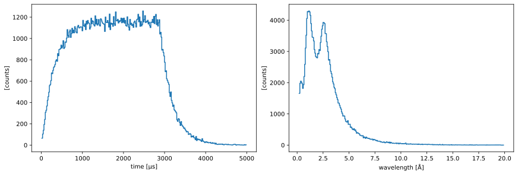
[8]:
ess_beamline.model_result.plot()
[8]:
Plot(ax=<Axes: xlabel='Time-of-flight (us)', ylabel='Distance (m)'>, fig=<Figure size 1200x480 with 2 Axes>)
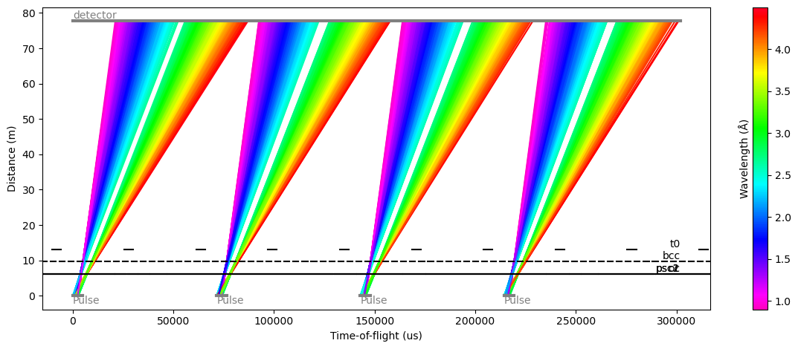
From this fake beamline, we extract the raw neutron signal at our detector:
[9]:
raw_data = ess_beamline.get_monitor("detector")[0]
# Visualize
raw_data.hist(event_time_offset=300).sum("pulse").plot()
[9]:
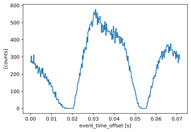
The total number of neutrons in our sample data that make it through the to detector is:
[10]:
raw_data.sum().value
[10]:
72474.0
Using the chopper cascade to chop the pulse#
The chopper_cascade module can now be used to chop a pulse of neutrons using the choppers created above.
Create a pulse of neutrons#
We then create a (fake) pulse of neutrons, whose time and wavelength ranges are close to that of our ESS pulse above:
[11]:
pulse_tmin = one_pulse.coords["time"].min()
pulse_tmax = one_pulse.coords["time"].max()
pulse_wmin = one_pulse.coords["wavelength"].min()
pulse_wmax = one_pulse.coords["wavelength"].max()
frames = chopper_cascade.FrameSequence.from_source_pulse(
time_min=pulse_tmin,
time_max=pulse_tmax,
wavelength_min=pulse_wmin,
wavelength_max=pulse_wmax,
)
Propagate the neutrons through the choppers#
We are now able to propagate the pulse of neutrons through the chopper cascade, chopping away the parts of the pulse that do not make it through.
For this, we need to decide how far we want to propagate the neutrons, by choosing a distance to our detector. We set this to 32 meters here.
[12]:
# Chop the frames
chopped = frames.chop(choppers.values())
# Propagate the neutrons to the detector
at_sample = chopped.propagate_to(Ltotal)
# Visualize the results
cascade_fig, cascade_ax = at_sample.draw()
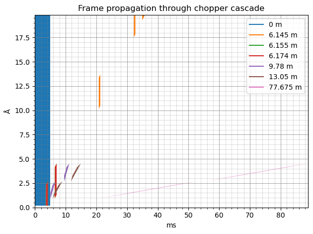
We can now see that at the detector (pink color), we have 2 sub-pulses of neutrons, where the longest wavelength of one frame is very close to the shortest wavelength of the next frame.
Computing the time-of-flight coordinate using Sciline#
Setting up the workflow#
We will now construct a workflow to compute the time-of-flight coordinate from the neutron events above, taking into account the choppers in the beamline.
[13]:
workflow = sl.Pipeline(unwrap.providers(), params=unwrap.params())
workflow[unwrap.PulsePeriod] = sc.reciprocal(ess_beamline.source.frequency)
workflow[unwrap.SourceTimeRange] = pulse_tmin, pulse_tmax
workflow[unwrap.SourceWavelengthRange] = pulse_wmin, pulse_wmax
workflow[unwrap.Choppers] = choppers
workflow[unwrap.Ltotal] = Ltotal
workflow[unwrap.RawData] = raw_data
workflow.visualize(unwrap.TofData)
[13]:

Checking the frame bounds#
We can check that the bounds for the frames the workflow computes agrees with the chopper-cascade diagram
[14]:
bounds = workflow.compute(unwrap.FrameAtDetector).subbounds()
bounds
[14]:
- timescippVariable(subframe: 2, bound: 2)float64s0.055, 0.089, 0.020, 0.053
- wavelengthscippVariable(subframe: 2, bound: 2)float64Å2.673, 4.528, 0.897, 2.704
[15]:
for b in sc.collapse(bounds["time"], keep="bound").values():
cascade_ax.axvspan(
b[0].to(unit="ms").value,
b[1].to(unit="ms").value,
color="gray",
alpha=0.2,
zorder=-5,
)
cascade_fig
[15]:
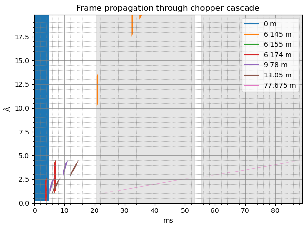
There should be one vertical band matching the extent of each pink polygon, which there is.
Computing a time-of-flight coordinate#
We will now use our workflow to obtain our event data with a time-of-flight coordinate:
[16]:
tofs = workflow.compute(unwrap.TofData)
tofs
[16]:
- pulse: 5
- Ltotal()float64m77.675
Values:
array(77.675) - distance()float64m77.675
Values:
array(77.675) - event_time_zero(pulse)datetime64µs2024-01-01T12:00:00.000000, 2024-01-01T12:00:00.071428, 2024-01-01T12:00:00.142857, 2024-01-01T12:00:00.214285, 2024-01-01T12:00:00.285714
Values:
array(['2024-01-01T12:00:00.000000', '2024-01-01T12:00:00.071428', '2024-01-01T12:00:00.142857', '2024-01-01T12:00:00.214285', '2024-01-01T12:00:00.285714'], dtype='datetime64[us]')
- (pulse)DataArrayViewbinned data [len=15393, len=18301, len=18195, len=18057, len=2528]
dim='event', content=DataArray( dims=(event: 72474), data=float64[counts], coords={'id':int64, 'event_time_offset':float64[s], 'tof':float64[s]}, masks={'blocked_by_others':bool})
Histogramming the data for a plot should show a profile with 6 bumps that correspond to the frames:
[17]:
tofs.bins.concat().hist(tof=300).plot()
[17]:
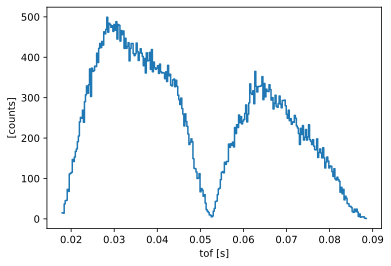
Converting to wavelength#
We can now convert our new time-of-flight coordinate to a neutron wavelength, using tranform_coords:
[18]:
from scippneutron.conversion.graph.beamline import beamline
from scippneutron.conversion.graph.tof import elastic
# Perform coordinate transformation
graph = {**beamline(scatter=False), **elastic("tof")}
wav_wfm = tofs.transform_coords("wavelength", graph=graph)
# Define wavelength bin edges
wavs = sc.linspace("wavelength", 0.8, 4.6, 201, unit="angstrom")
wav_wfm.hist(wavelength=wavs).sum("pulse").plot()
[18]:
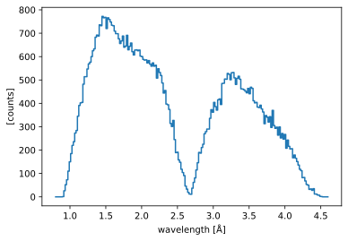
Comparing to the ground truth#
As a consistency check, because we actually know the wavelengths of the neutrons we created, we can compare the true neutron wavelengths to those we computed above.
[19]:
ground_truth = ess_beamline.model_result["detector"].data.flatten(to="event")
ground_truth = ground_truth[~ground_truth.masks["blocked_by_others"]]
pp.plot(
{
"wfm": wav_wfm.hist(wavelength=wavs).sum("pulse"),
"ground_truth": ground_truth.hist(wavelength=wavs),
}
)
[19]:
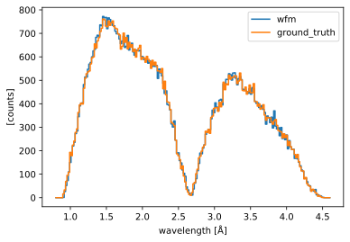
Multiple detector pixels#
It is also possible to compute the neutron time-of-flight for multiple detector pixels at once, where every pixel has different frame bounds (because every pixel is at a different distance from the source).
In our setup, we simply propagate the same neutrons to multiple detector pixels, as if they were not absorbed by the first pixel they meet.
[20]:
Ltotal = sc.array(dims=['detector_number'], values=[77.675, 76.0], unit='m')
monitors = {
f"detector{i}": ltot for i, ltot in enumerate(Ltotal)
}
ess_beamline = FakeBeamlineEss(
choppers=choppers,
monitors=monitors,
run_length=sc.scalar(1 / 14, unit="s") * 4,
events_per_pulse=200_000,
)
Our raw data has now a detector_number dimension of length 2.
We can plot the neutron event_time_offset for the two detector pixels and see that the offsets are shifted to the left for the pixel that is closest to the source.
[21]:
raw_data = sc.concat(
[ess_beamline.get_monitor(key)[0] for key in monitors.keys()],
dim='detector_number',
)
# Visualize
pp.plot(sc.collapse(raw_data.hist(event_time_offset=300).sum("pulse"), keep='event_time_offset'))
[21]:
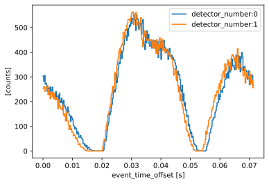
Computing time-of-flight is done in the same way as above. We need to remember to update our workflow:
[22]:
# Update workflow
workflow[unwrap.Ltotal] = Ltotal
workflow[unwrap.RawData] = raw_data
# Compute tofs and wavelengths
tofs = workflow.compute(unwrap.TofData)
wav_wfm = tofs.transform_coords("wavelength", graph=graph)
# Compare in plot
ground_truth = []
for det in ess_beamline.monitors:
data = ess_beamline.model_result[det.name].data.flatten(to="event")
ground_truth.append(data[~data.masks["blocked_by_others"]])
figs = [
pp.plot(
{
"wfm": wav_wfm['detector_number', i].bins.concat().hist(wavelength=wavs),
"ground_truth": ground_truth[i].hist(wavelength=wavs),
}, title=f"Pixel {i+1}"
) for i in range(len(Ltotal))
]
figs[0] + figs[1]
[22]:
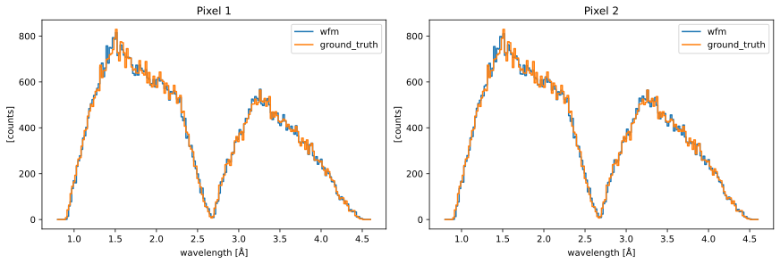
Handling time overlap between subframes#
In some (relatively rare) cases, where a chopper cascade is slightly ill-defined, it is sometimes possible for some subframes to overlap in time with other subframes.
This is basically when neutrons passed through different pulse-shaping chopper openings, but arrive at the same time at the detector.
In this case, it is actually not possible to accurately determine the wavelength of the neutrons. ScippNeutron handles this by clipping the overlapping regions and throwing away any neutrons that lie within it.
To simulate this, we modify slightly the phase and the cutouts of the band-control chopper:
[23]:
disk_choppers['bcc'] = DiskChopper(
frequency=sc.scalar(112.0, unit="Hz"),
beam_position=sc.scalar(0.0, unit="deg"),
phase=sc.scalar(240 - 180, unit="deg"),
axle_position=sc.vector(value=[0, 0, 9.78], unit="m"),
slit_begin=sc.array(dims=["cutout"], values=[-36.875, 143.125], unit="deg"),
slit_end=sc.array(dims=["cutout"], values=[46.875, 216.875], unit="deg"),
slit_height=sc.scalar(10.0, unit="cm"),
radius=sc.scalar(30.0, unit="cm"),
)
# Update the choppers
choppers = {
key: chopper_cascade.Chopper.from_disk_chopper(
chop,
pulse_frequency=sc.scalar(14.0, unit="Hz"),
npulses=1,
)
for key, chop in disk_choppers.items()
}
# Go back to a single detector pixel
Ltotal = sc.scalar(76.55 + 1.125, unit="m")
ess_beamline = FakeBeamlineEss(
choppers=choppers,
monitors={"detector": Ltotal},
run_length=sc.scalar(1 / 14, unit="s") * 4,
events_per_pulse=200_000,
)
ess_beamline.model_result.plot()
[23]:
Plot(ax=<Axes: xlabel='Time-of-flight (us)', ylabel='Distance (m)'>, fig=<Figure size 1200x480 with 2 Axes>)
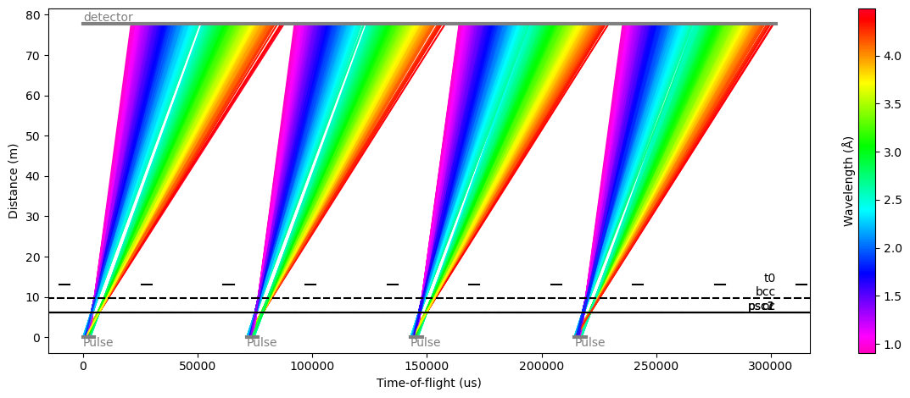
We can now see that there is no longer a gap between the two frames at the center of each pulse (green region).
Another way of looking at this is making the chopper-cascade diagram and zooming in on the last frame (pink), which also show overlap in time:
[24]:
# Chop the frames
chopped = frames.chop(choppers.values())
# Propagate the neutrons to the detector
at_sample = chopped.propagate_to(Ltotal)
# Visualize the results
cascade_fig, cascade_ax = at_sample.draw()
cascade_ax.set_xlim(45.0, 58.0)
cascade_ax.set_ylim(2.0, 3.0)
[24]:
(2.0, 3.0)
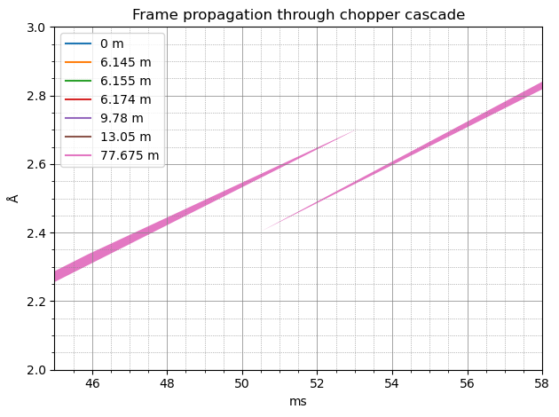
To avoid the overlap in time, the region in the middle will be excluded, discarding the neutrons from the time-of-flight calculation (in practice, they are given a NaN value as a time-of-flight).
This is visible when comparing to the true neutron wavelengths, where we see that some counts were lost between the two frames.
[25]:
workflow[unwrap.Choppers] = choppers
workflow[unwrap.Ltotal] = Ltotal
workflow[unwrap.RawData] = ess_beamline.get_monitor("detector")[0]
# Compute time-of-flight
tofs = workflow.compute(unwrap.TofData)
# Compute wavelength
wav_wfm = tofs.transform_coords("wavelength", graph=graph)
# Compare to the true wavelengths
ground_truth = ess_beamline.model_result["detector"].data.flatten(to="event")
ground_truth = ground_truth[~ground_truth.masks["blocked_by_others"]]
pp.plot(
{
"wfm": wav_wfm.hist(wavelength=wavs).sum("pulse"),
"ground_truth": ground_truth.hist(wavelength=wavs),
}
)
[25]:
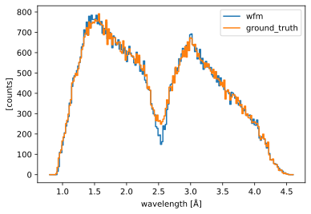